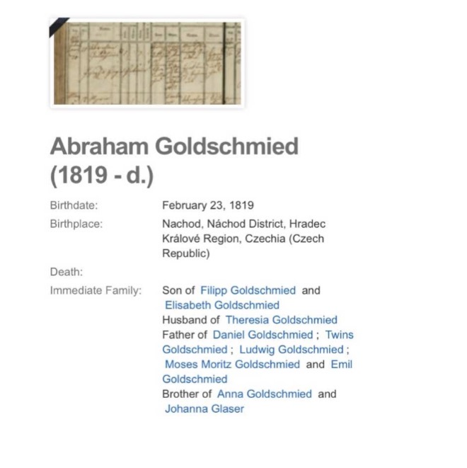
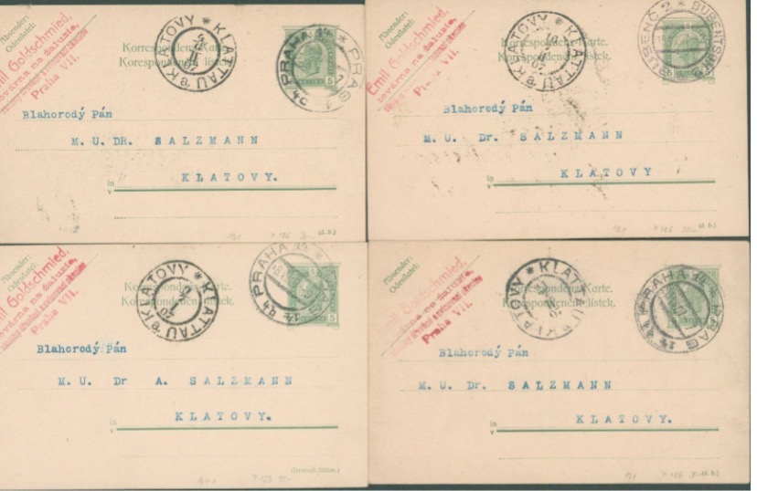
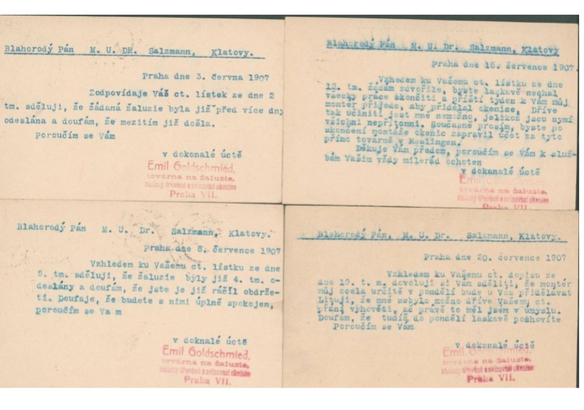
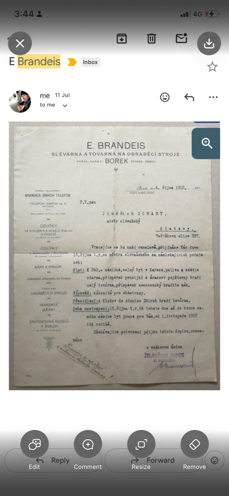
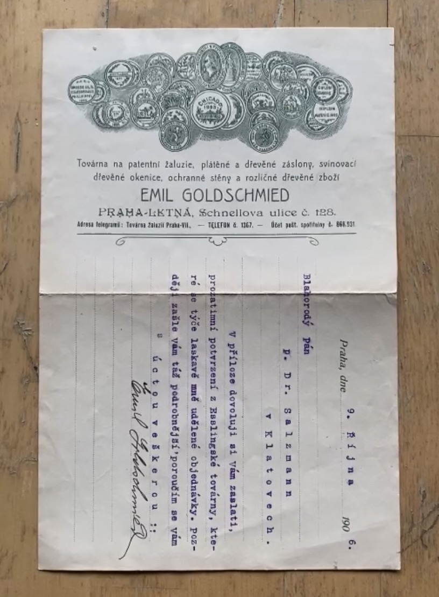
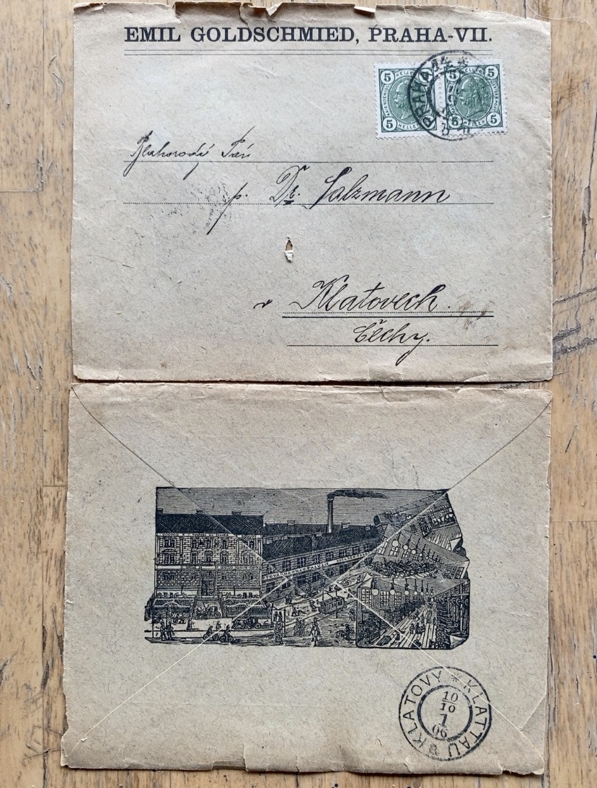
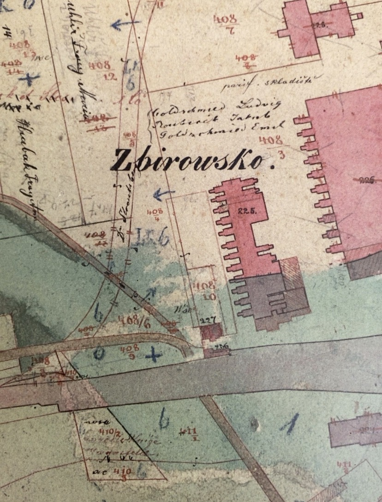

The question
The surviving evidence places several similar names around the post-Strousberg story, but it does not yet establish a single chain between them. Strousberg’s 1875 Zbirow assessment was addressed to H. v. Goldschmidt & Co., Vienna. Separate cadastral/property material appears to contain the names Ludwig Goldschmied and Emil Goldschmied, together with a third person whose identity and role require verification. Later documents establish an Emil Goldschmied as a Prague VII businessman. This page documents those clues without presuming that Goldschmidt and Goldschmied were related, or that appearance in a property record proves ownership or operation of the Borek factory.
Working timeline
A genealogical profile identifies Filipp and Elisabeth Goldschmied as his parents, Theresia as his wife, and lists Ludwig and Emil among his sons. This is a valuable family-tree lead but should be checked against civil, Jewish-community or archival records.
{kind=link}

The engineering and financial report preserved in Strousberg’s 1876 memoir was signed in Vienna on 1 March 1875. It establishes the Vienna banking house in the documentary history of the Strousberg crisis, but does not establish a relationship to the Goldschmied family. Read the 1875 Zbirow report page.
The current reading includes Ludwig and Emil Goldschmied and a third person. The original record must be examined before fixing the third name, profession, legal role, exact parcels or implications for ownership. This is presently the pivotal evidence for explaining why the Goldschmied family belongs in the post-Strousberg investigation.
The coincidence of name, place and period makes this a significant biographical lead, but the archive has not yet established that this communal figure was the same Emil Goldschmied documented in the later Prague VII business records.
Surviving headed material identifies an enterprise dealing with jalousies, shutters and related manufactured goods. The document helps establish the commercial identity of Emil Goldschmied independently of the earlier property evidence.
Correspondence from Emil Goldschmied in Prague to Dr. Salzmann in Klatovy concerns jalousies/blinds: dispatch, completion or installation, customer satisfaction and remedial attention. The sequence gives unusually concrete evidence of how Goldschmied’s business operated.
{kind=link}

{kind=link}

Source images under review
The archive folder also preserves the following material for identification and incorporation into the chronology as its provenance and contents are established.
{kind=link}

{kind=link}

{kind=link}

{kind=link}

Questions the archive is testing
- Who exactly were Emil and Ludwig Goldschmied, and what were their birth and death dates?
- What property or legal interest is represented by their appearance in the Zbiroh cadastral/property record?
- Who is the third person appearing with them, and was that person an owner, lawyer, representative, creditor or something else?
- Are the cadastral Emil Goldschmied and the later Prague VII manufacturer the same person?
- Is the Prague VII manufacturer identical with the Emil Goldschmied active in the Israelite Temple Association?
- Was there any documented relationship between the Goldschmied family and H. v. Goldschmidt & Co. of Vienna? Similarity of surname is not evidence of such a relationship.
- What happened to the Borek industrial property between Strousberg’s collapse and the later Brandeis-era ownership?
Method
Connections are documented, not presumed. A shared surname, religion, profession, business relationship or appearance in the same property records does not by itself establish coordinated action. Where relationships are demonstrated by primary evidence, the archive records them; where they remain possible, they are presented as questions.